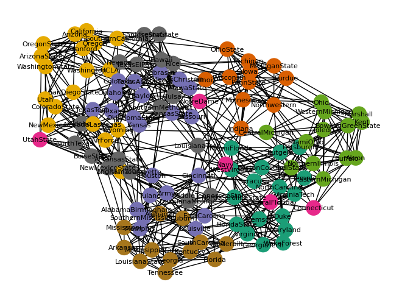

Clique Percolation Beispiel
Clique Percolation Beispiel#
Americal College Football Netzwerk (Girvan and M. E. J. Newman, Proc. Natl. Acad. Sci. USA 99, 7821-7826 (2002).).
http://www-personal.umich.edu/~mejn/netdata/
import networkx as nx
import matplotlib.pyplot as plt
from networkx.algorithms.community import k_clique_communities
g = nx.read_gml('data/football.gml')
Struktur des Netzwerks
College Teams sind miteinander verbunden, wenn sie gegeneinander gespielt haben. Da die amerikanische College Liga in Divisionen organisiert ist, finden die meisten Spiele innerhalb der eigenen Division statt. Dadurch entsteht ein Netzwerk mit Community Struktur.
nx.draw_spring(
g, node_color=list(nx.get_node_attributes(g, 'value').values()),
cmap=plt.cm.Dark2,
with_labels=True,
font_size=8
)

communities = k_clique_communities(g, k=4)
list(communities)
[frozenset({'LouisianaLafayette',
'LouisianaMonroe',
'LouisianaTech',
'MiddleTennesseeState'}),
frozenset({'BallState',
'CentralMichigan',
'EasternMichigan',
'NorthernIllinois',
'Toledo',
'WesternMichigan'}),
frozenset({'Clemson',
'Duke',
'FloridaState',
'GeorgiaTech',
'Maryland',
'NorthCarolina',
'NorthCarolinaState',
'Virginia',
'WakeForest'}),
frozenset({'Akron',
'BowlingGreenState',
'Buffalo',
'CentralMichigan',
'Kent',
'Marshall',
'MiamiOhio',
'Ohio',
'WesternMichigan'}),
frozenset({'Illinois',
'Indiana',
'Iowa',
'Michigan',
'MichiganState',
'Minnesota',
'Northwestern',
'OhioState',
'PennState',
'Purdue',
'Wisconsin'}),
frozenset({'AirForce',
'BrighamYoung',
'ColoradoState',
'Nevada',
'NevadaLasVegas',
'NewMexico',
'SanDiegoState',
'Utah',
'Wyoming'}),
frozenset({'FresnoState',
'Hawaii',
'Nevada',
'Rice',
'SanJoseState',
'SouthernMethodist',
'TexasChristian',
'TexasElPaso',
'Tulsa'}),
frozenset({'BostonCollege',
'EastCarolina',
'MiamiFlorida',
'Navy',
'NotreDame',
'Pittsburgh',
'Rutgers',
'Syracuse',
'Temple',
'VirginiaTech',
'WestVirginia'}),
frozenset({'Alabama',
'Arkansas',
'Auburn',
'Florida',
'Georgia',
'Kentucky',
'LouisianaState',
'Mississippi',
'MississippiState',
'SouthCarolina',
'Tennessee',
'Vanderbilt'}),
frozenset({'Baylor',
'Colorado',
'Iowa',
'IowaState',
'Kansas',
'KansasState',
'Missouri',
'Nebraska',
'Oklahoma',
'OklahomaState',
'Texas',
'TexasA&M',
'TexasTech'}),
frozenset({'Arizona',
'ArizonaState',
'California',
'Idaho',
'Oregon',
'OregonState',
'SouthernCalifornia',
'Stanford',
'UCLA',
'Washington',
'WashingtonState'}),
frozenset({'AlabamaBirmingham',
'Army',
'Cincinnati',
'EastCarolina',
'Houston',
'Louisville',
'Memphis',
'SouthernMississippi',
'Tulane'}),
frozenset({'ArkansasState',
'BoiseState',
'Idaho',
'NewMexicoState',
'NorthTexas',
'UtahState'})]